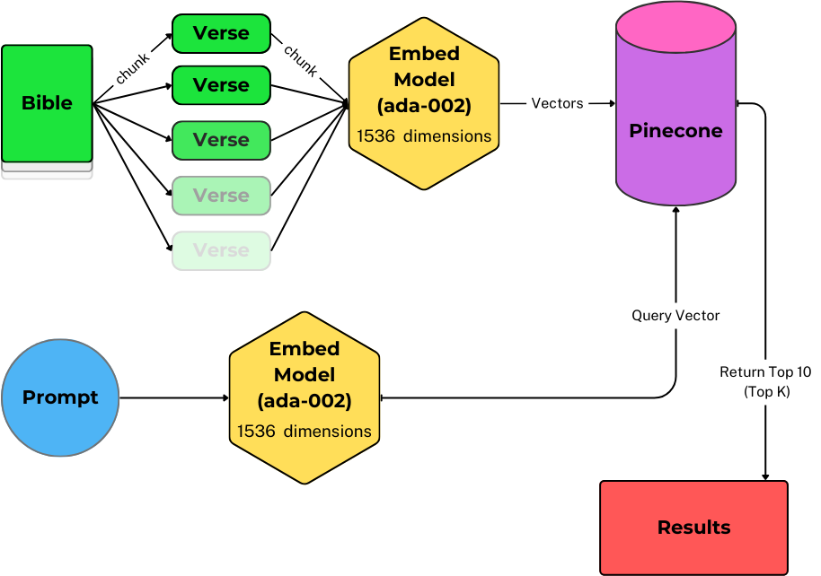

Process Bible Lookup
Enter a prompt to discover most relevant bible chapters
Chapter Fetch Pipeline Detail
Enter a prompt to discover most relevant bible verses
Verse Fetch Pipeline Detail
Enter a prompt to see details
Chapters
Verses
Details
Your Augmented Response
Prompt Template
Augmented Response
Write a new chapter
Provide guidance
Judge if embeds politically correct
Prompt Template:
Embed Template:
Default Settings
Embedding Type
Query Verses to Embed Chapters
Query Verses to Embed Verses
Query Chapter to Embed Chapter
Your results will vary based on the retrieval technique
Chat
Option
Retrieve by Chapter
Retrieve by Verse
